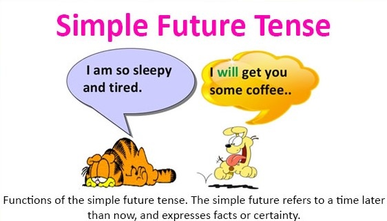

<!-- We don't need full layout here, because this page will be parsed with Ajax-->
<!-- Top Navbar-->

<div class="pages">
  <!-- Page, data-page contains page name-->
  <div data-page="about" class="page">
    <!-- Scrollable page content-->
    <div class="page-content">
      <div class="navbar">
  <div class="navbar-inner">
    <div class="left"><a href="#" class="back link"> <i class="icon icon-back"></i><span>Back</span></a></div>
    <div class="center sliding">Simple Future  </div>
    <div class="right">
      <!-- Right link contains only icon - additional "icon-only" class--><a href="#" class="link icon-only open-panel"> <i class="icon icon-bars"></i></a>
    </div>
  </div>
</div>
      <div class="content-block presentcon">
    
    <div class="row no-gutter">
        <div class="col-100">



        </div>
    </div>
    <h2>Going to :</h2>
There is no one 'future tense' in English. There are 4 future forms. The one which is used most often in spoken English is 'going to', not 'will'.

We use 'going to' when we want to talk about a plan for the future.
<h2>Examples</h2>

<ul>
<li>I'm going to see him later today.</li>
<li>They're going to launch it next month.</li>
<li>We're going to have lunch first.</li>
<li>She's going to see what she can do.</li>
<li>I'm not going to talk for very long.</li>
</ul>
<hr>
<h2>Will : </h2>

<h2>Examples</h2>

Some people have been taught that 'will' is 'the future' in English. This is not correct. Sometimes when we talk about the future we cannot use 'will'. Sometimes when we use 'will' we are not talking about the future.

We can use 'will' to talk about future events we believe to be certain.
<ul>
<li>The sun will rise over there tomorrow morning.</li>
<li>Next year, I'll be 50.</li>
<li>That plane will be late. It always is.</li>
<li>There won't be any snow. I'm certain. It's too warm.</li>
</ul>
      </div>
    </div>
  </div>
</div>